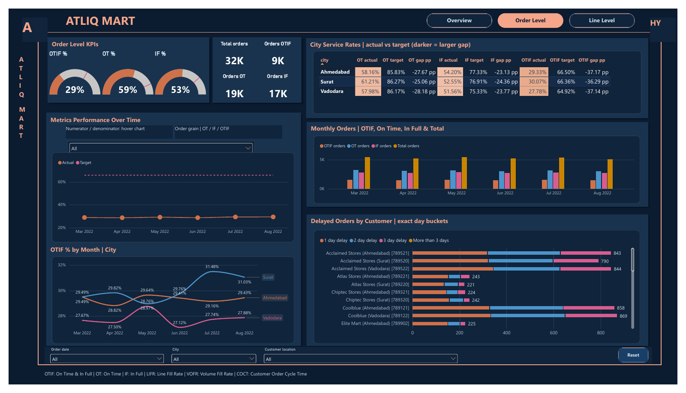

AtliQ Mart / Giai đoạn phân phối
Giao đúng hạn.
Giao đủ hàng.
Xem hàng có đến đúng hạn và đủ số lượng không tại Surat, Ahmedabad và Vadodara. Tìm điểm yếu trước khi mở rộng.
Báo cáo Power BI
Xem trước ba trang dashboard.

Overview · Đây là ảnh chụp, không có bộ lọc. Mở tệp PBIX trong Power BI Desktop để lọc dữ liệu.
Xem thêm Order Level và Line Level



01 / Vấn đề · Dữ liệu
Giao trễ và thiếu hàng đang ảnh hưởng đến khách hàng.
AtliQ Mart sản xuất hàng tiêu dùng nhanh tại Gujarat và phân phối ở Surat, Ahmedabad và Vadodara. Một số khách hàng lớn không gia hạn hợp đồng vì hàng thiết yếu đến trễ hoặc thiếu. Dashboard cho thấy tỷ lệ giao đúng hạn (OT), giao đủ (IF) và đạt cả hai (OTIF). Bạn có thể xem từ tổng quan đến từng dòng hàng.
Dữ liệu chỉ cho thấy kết quả quá khứ. Repo chưa có hệ thống cập nhật tự động hoặc nhật ký giao nhận, nên chưa thể biết nguyên nhân thiếu hàng.
65,96% dòng hàng giao đủ (LIFR). 96,59% là số lượng giao / số lượng đặt (VOFR). Đây là hai cách đo khác nhau.
02 / Dấu hiệu cần kiểm tra
Nhóm lớn nhất: đơn đến đúng hạn nhưng thiếu hàng.
Trong 22.521 đơn không đạt OTIF, có 9.522 đơn (42,28%) đến đúng hạn nhưng thiếu hàng. Nên kiểm tra nhóm này trước. Dữ liệu chưa cho biết hàng thiếu ở bước phân bổ, soạn hàng, xuất kho hay nhận hàng.
Có 7.539 đơn (33,48%) chỉ trễ và 5.460 đơn (24,24%) vừa trễ vừa thiếu. Mỗi đơn chỉ thuộc một nhóm.
Đừng vội kết luận
65,96% dòng hàng giao đủ, trong khi 96,59% số lượng được giao. Tỷ lệ tổng có thể che đi các dòng còn thiếu.
Chọn nhóm để xem
Lọc theo ngày, thành phố, khách hàng và sản phẩm để tìm các nhóm thường giao thiếu.
Ghi lại từng bước
Chưa có số lượng ghi lại lúc phân bổ → soạn hàng → xuất kho → nhận hàng. Vì vậy chưa thể quy lỗi cho kho hay đơn vị vận chuyển.
Đừng đổi thiếu thành trễ
Tiếp tục theo dõi OT. Ít đơn thiếu hơn nhưng nhiều đơn trễ hơn không phải là tiến bộ.
03 / Việc cần làm
Xem dữ liệu hiện có, rồi thử nghiệm để kiểm chứng.
Dashboard có ba tầng: Overview để thấy vấn đề, Order Level để tách nhóm đơn và Line Level để xem từng dòng hàng. Các tầng này giúp chuẩn bị thử nghiệm nhưng không thay thế số liệu ghi nhận thực tế.
Xem tổng quan
Overview cho thấy OT, IF, OTIF và mức khác chỉ tiêu của 35 khách hàng.
Tách nhóm đơn
Order Level tách đơn trễ, thiếu và lỗi cả hai; xem thêm số ngày trễ.
Xem dòng hàng
Line Level đặt LIFR cạnh VOFR và lọc theo sản phẩm, danh mục.
Thử nghiệm
Thử A/B 10 ngày làm việc trên đơn có nhật ký, đối soát số lượng ở từng bước.
04 / Bắt đầu
Mở báo cáo, không cần build.
Mở tệp PBIX bằng Power BI Desktop. Để xem bản đề xuất, dùng phần mềm đọc PPTX.
- Sao chép repo.
git clone https://github.com/lengominhhuy510-maker/Supply-chain-FMCG-distribution-dashboard.git cd Supply-chain-FMCG-distribution-dashboard
- Mở
SupplyChain_Design_Dashboard.pbixtrong Power BI Desktop; xem Overview, Order Level và Line Level. - Lọc theo thành phố, khách hàng và ngày; mở dữ liệu gốc trong
Dataset/. Nếu Refresh hỏi đường dẫn, chọn lại CSV trong thư mục này. - Xem
atliq-service-recovery-board-proposal.pptxđể đọc đề xuất thử nghiệm.
05 / Trong repo
Nguồn dữ liệu & đầu ra.
| Thành phần | Vai trò |
|---|---|
| Dataset/ | Bốn bảng thông tin và hai bảng dữ liệu: khách hàng, ngày, sản phẩm, chỉ tiêu, đơn hàng và dòng hàng. |
| SupplyChain_Design_Dashboard.pbix | Ba trang báo cáo, có bộ lọc và so sánh chỉ tiêu. |
| atliq-service-recovery-board-proposal.pptx | Tóm tắt dữ liệu và đề xuất thử nghiệm; không khẳng định nguyên nhân thiếu hàng. |
| README.md / README.en.md | Tài liệu Markdown tiếng Việt và tiếng Anh trên GitHub. |
Thử nhanh dữ liệu nguồn bằng Python 3 (thư viện chuẩn):
python -c "import csv; r=list(csv.DictReader(open('Dataset/fact_orders_aggregate.csv', encoding='utf-8-sig', newline=''))); ok=sum(int(x['otif']) for x in r); print(f'{ok:,} / {len(r):,} = {ok/len(r):.2%} OTIF')"
# 9,208 / 31,729 = 29.02% OTIF06 / Tiếp theo
Ghi lại số lượng trước khi tìm nguyên nhân.
- Có ba trang dashboard và sáu bảng CSV.
- Đề xuất kiểm tra giao thiếu trước khi mở rộng.
- Cập nhật dữ liệu định kỳ và kiểm tra chất lượng dữ liệu.
- Ghi lại số lượng tại các bước phân bổ → soạn hàng → xuất kho → nhận hàng.
Khi báo lỗi, nêu rõ cách gặp lại lỗi và kết quả mong đợi. Khi gửi PR, nêu nguồn dữ liệu và chỉ số bị ảnh hưởng. Repo chưa có tệp LICENSE; đừng mặc định dữ liệu được dùng lại.